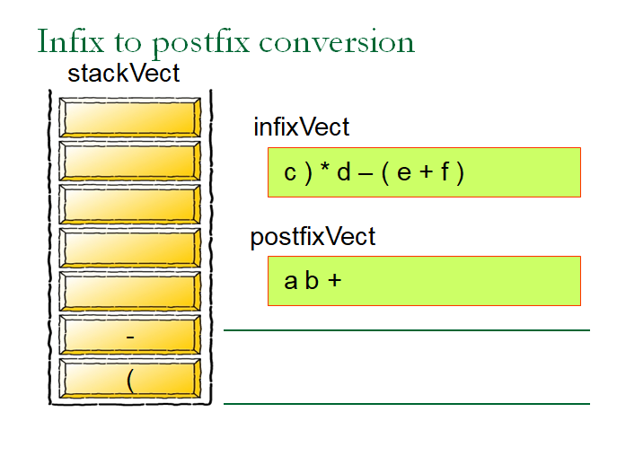

2.3 Stack applications
2.3.1 Balancing symbols
Compilers check our programs for syntax errors, but frequently a lack of one symbol (such as a missing brace or comment starter) will cause the compiler to spill out a hundred lines of diagnostics without identifying the real error.
A useful tool in this situation is a program that checks whether everything is balanced. Thus, every right brace, bracket, and parenthesis must correspond to their left counterparts. The sequence [()] is legal, but [(]) is wrong. For simplicity, we will just check for balancing of parentheses, brackets, and braces and ignore any other character that appears.
Algorithm
- Make an empty stack.
- Read characters until end of file/string.
- If the character is an open brace like (, {, [, push it onto the stack.
- If it is a close brace like ). }, ], then if the stack is empty report an error. Otherwise, pop the stack.
- If the symbol popped is not the corresponding opening symbol, then report an error.
- At end of file, if the stack is not empty report an error.
2.3.2 Arithmetic Expression Formats
Infix Notation
- The operators go in between the operands
- Ex: A+B, C*D
- Requires Parentheses for expression evaluation
Postfix Notation
- The operators go in between the operands
- Ex: AB+, CD*
Prefix Notation
- The operators go in between the operands
- Ex: +AB, *CD
2.3.3 Infix to postfix expression conversion
- Start with empty stack and scan the given expression from left to right one by one.
-
- If you see an operand, print it.
- If you see '(', push it in stack.
- If you see ')', pop and print symbols until you pop a '(' from a stack.
- If you see a +, check the top of stack. If top of the stack is +, -, *, / (Equal or higher priority), pop and print symbols. Then push '+'.
- Step 5 can be applied for '-' (minus) also.
- If You see '*', check top of stack for *, /. If so, pop and print symbols and then push '*'. Otherwise print '*'.
- Step 7 is applicable for '/' (division) also.
- Once you reach end of expression, pop the entire stack and print the symbols.
- Hence the idea is, whenever we see a symbol (operand), before pushing into stack, check the top of stack.
- If Stack Top contains any higher /equal operator precedence, pop the stack until you get an empty stack or lower precedence operator on top of stack. Then push the current symbol.
- If top of stack contains lower precedence operator, push the current operator.



2.3.4 Postfix Expression evaluation
- Scan the Postfix string from left to right.
- Initialize an empty stack.
- If the scannned character is an operand, push it to the stack.
- Else If the scanned character is an operator(op), there will be at least two operands in the stack.
- Pop stack two times and store popped items in val2 and val1 respectively.
- Now evaluate the expression val1 op val2 and push the result into stack.
- Repeat this step till all the characters are scanned.
- After all characters are scanned, we will have only one element in the stack which is the result of evaluating the expression.
- So pop the stack ad print the final result.
Postfix Notation
- The operators go after the operands
- Parenthesis are not required for identifying operatory priority.
- Ex: AB+, CD*